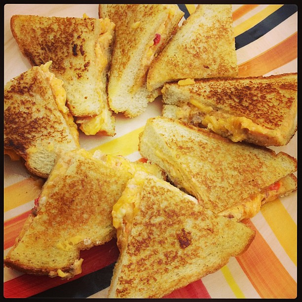

Description:
Learn how to prepare a grilled cheese sandwich.
Ingredients
Steps
- Spread butter on the outside of two slices of bread.
- Place the slices of bread in pan, buttered side down.
- Put a slice of cheese on the face-up side of each slice of bread. Cook on medium heat for 30 seconds, and then close the sandwich and cook each side for 60 seconds.
Return to homepage